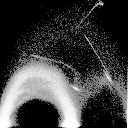

Information for creating scatterplots is seen from running "gkms scat":Going with the defaults:gkms scat: Make V-G and V-H scatterplots. These provide a quick way to inspect a histogram volume, in order to verify that the derivative inclusion ranges were appropriate, and to get an initial sense of what sorts of boundaries were present in the original volume. Usage: gkms scat [-g <gamma>] -i <hvolIn> -o <vgOut vhOut> -g <gamma> = gamma used to brighten/darken scatterplots. gamma > 1.0 brightens; gamma < 1.0 darkens. Negative gammas invert values (like in xv). (double); default: "1.0" -i <hvolIn> = input histogram volume (from "gkms hvol") -o <vgOut vhOut> = Filenames to use for two output scatterplots, (gradient magnitude versus value, and 2nd derivative versus value); can use PGM or PNG format (2 strings)gkms scat -i engine-hvol.nrrd -o engine-vg.png engine-vh.pngThese are the sorts of scatterplots that I made at the beginning of my MS thesis research (in 1995), after I had decided that making histogram volumes was useful, but before I'd come up with a way of analyzing them. In both of them, the scalar data value is the horizontal axis, and the derivative value (gradient magnitude in VG, and second directional derivative in gradient direction in VH) on the vertical axis. The ability to glean information from these scatterplots is not immediate; reading this section and this section from my MS thesis may be helpful.
 engine-vg.png engine-vh.png The scatterplots above suggest that the inclusion range for the gradient magnitude ("g") is good, but that too many second derivative values ("h") were included: the characteristic N-shaped curve is quite compressed along the vertical axis. So, we'll go back and re-run the histogram volume generation with something other than the defaults, changing the inclusion strategy for second derivatives to "p:0.6", which is actually quite high (this dataset is unusual in this respect). We also generate new scatterplots:
gkms hvol -i engine-crop.nrrd -s f:1.0 p:0.005 p:0.6 -o engine-hvol.nrrd gkms scat -i engine-hvol.nrrd -o engine-vg2.png engine-vh2.png

engine-vg2.png engine-vh2.png If you want to print the scatterplot somewhere, it is probably best to invert it so that the fine points don't get lost in black toner:
gkms scat -g -1 -i engine-hvol.nrrd -o engine-vg-inv.png engine-vh-inv.pngUsing a negative gamma gives you the same result as using a positive gamma, and then inverting the image.
engine-vg-inv.png engine-vh-inv.png The scatterplots are informative because, in part, of a histogram equalization which is done on the scatterplot image so that the different gray levels are better utilized. This is followed by the gamma. These two operations are done by nrrd's nrrdHistoEq() and nrrdArithGamma() functions, respectively. This section of my MS thesis describes that process.
{kind=link}
{kind=link}
{kind=link}
{kind=link}
{kind=link}